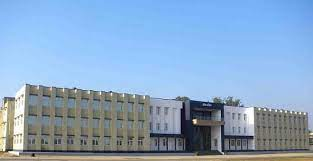

|  |
History Banasthali Vidyapith was founded on 6 October 1935 by freedom fighters and educationists Hiralal Shastri and Ratan Shastri. The institution was declared as a 'Deemed University' in 1983.[3][4] While NAAC has re-accredited Banasthali Vidyapith at the highest possible ‘Grade A’ level in 2011, the Review Committee (Tandon Committee) of Ministry of HRD also appreciated the overall efforts of Vidyapith in the areas of Institutional Governance, Academic Achievements, Research, Student Progression, Infrastructure etc. and categorized Banasthali Vidyapith under ‘Category A’ list of ‘Institutions Deemed to be University’ in 2010. The university is featured in NIRF,[5] QS I Gauge,[6][7] and Times Higher Education[8] rankings. In 2020, NAAC accredited this university with A++ grading. |
|
The Vidyapith has had virtual autonomy for its school programmes since the beginning and was affiliated to an outside agency for its university programmes in 1983. In 1983, the government of India, on the advice of the University Grants Commission, notified the Vidyapith as an institution deemed to be university.[ After attaining university status, The Vidyapith restructured its undergraduate programme. At the postgraduate level, it introduced courses in Computer Science, Operational Research, Electronics and Biotechnology. Teacher Education and Management have been started. New courses include M.Sc. (Bio-Informatics), M.Sc. (Pharmaceutical Chemistry) and M.Sc. (Applied Microbiology). Along with professional programmes such as MBA and MCA, all postgraduate courses in the Faculty of Science have a semester system. From 2004, all Social Science, Humanities and Home Science Post-graduate programmes have been run as semester courses. |
|